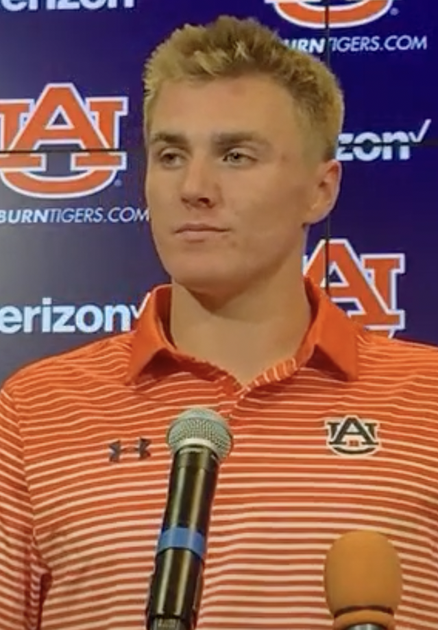

The broncos offence is one that has only young players with some exceptions.
Broncos oldest playersThe broncos offence may not be a top 5, but the offence is defenetly a really good offence, that has young players. The Broncos offence this year has proven to be a great offence like during the comeback against the Eagles. The broncos this year has been really good this year being lead by a second year QB, Bo Nix, who should have won offensive rookie of the year, but sadly Jaden Daniels Won even though Bo had a better year. Bo Nix has been leading the broncos and every game the Broncos could have won, but got beat last second.
Bo Nix wasn't the only great QB for the Denver Broncos. The Broncos also had people like John Elway, Peyton Manning, and maybe Bo Nix in the future.
information from Broncos games

From: Wikipedia Commons By: Unknwon